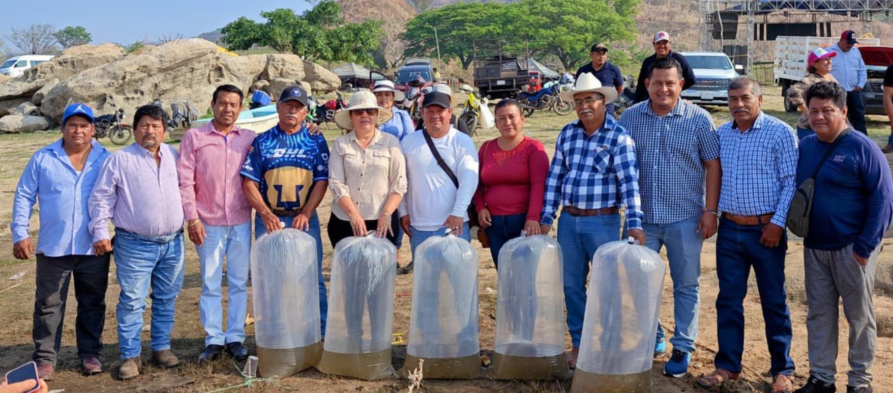
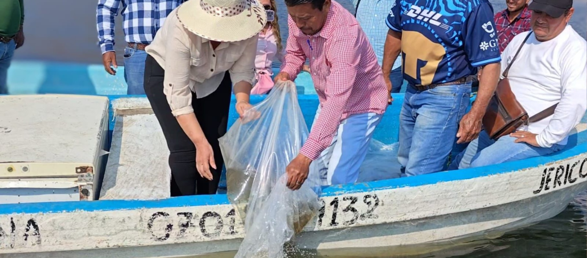

Entrega la Secretaría de Pesca y Acuacultura del
Pueblo,
70 mil crías de tilapia a productores acuícolas en El
Parral, Chiapas.

El Parral, Chiapas.– En seguimiento a la instrucción del gobernador Eduardo Ramírez y a las indicaciones de la secretaria de Pesca y Acuacultura del Pueblo, Judith Torres Vera, se llevó a cabo la entrega de 70 mil crías de mojarra tilapia a productores acuícolas del municipio de El Parral.
Esta acción tiene como objetivo fortalecer la producción acuícola en la región y contribuir al desarrollo económico de las familias dedicadas a esta actividad. Se estima que, con la siembra de estas crías, se logre una producción aproximada de 17.5 toneladas de carne en un periodo de cinco a seis meses.
Asimismo, se prevé una derrama económica cercana a 1 millón 50 mil pesos, beneficiando de manera directa a 285 acuacultores, lo que representa un impulso significativo para la economía local.

Durante la actividad, se reconoció la colaboración de la presidenta municipal, Elvira del Carmen Castañeda Maza, por su apoyo en la coordinación de estas acciones en favor del sector acuícola del municipio.
Con este tipo de iniciativas, el Gobierno del Estado reafirma su compromiso con el fortalecimiento de la producción, el impulso a la economía local y la promoción del desarrollo sustentable, consolidando así el bienestar de las comunidades chiapanecas bajo el enfoque de prosperidad compartida en la nueva etapa de la pesca y la acuacultura en Chiapas.
Compartir esta publicación